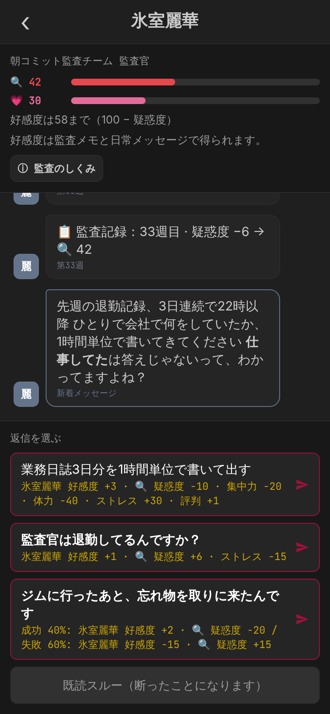
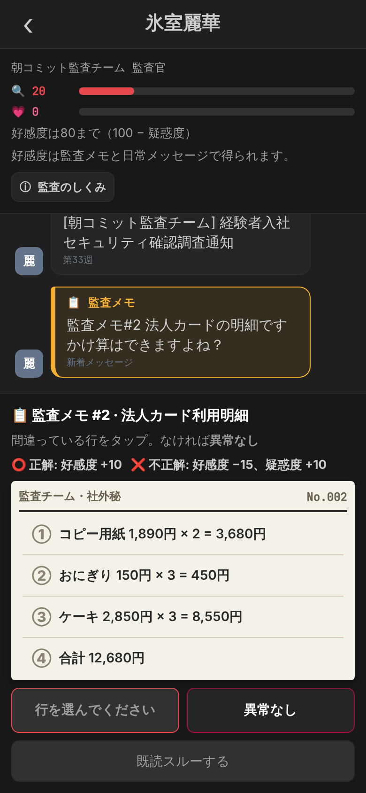

氷室麗華 攻略
ライバルの大企業、朝コミットの監査官の麗華。疑惑度、監査メモ、11の容疑、懲戒解雇まで、被監査人から夫になる方法
朝コミットの監査チームの監査官。入社初日に自分を機密漏えいの調査対象として呼び出す、業界でいちばん厳しい人です。
- 朝コミット（ライバルの大企業）に経験者採用で入ると監査が始まります。疑惑度80、好感度0からスタート。
- ゲージ2つ: 🔍 疑惑度と💗 好感度。好感度は100 − 疑惑度を超えられず、片想いの誘い、告白、プロポーズは疑惑度0のときだけ来ます。
- 好感度は3週ごとに来る監査メモ（間違った行を探すクイズ）と毎日の監査メッセージだけで上がります。朝コミットで疑惑度100ならその場で懲戒解雇（周回終了） ⚠️
- うまくやれば意外と早いです: メモを全部当てれば疑惑度がすぐ0になり、デートをこつこつ入れれば結婚まで行けます。
麗華のルートは恋愛シミュレーションというより監査サバイバルゲームです 😅 株を売り買いすれば株依存、限定品を先に買えば発売情報の漏えい、残業3枠なら夜間単独勤務… 麗華は全部見ています。そのかわりクリーンに暮らしてメモをきちんと解けば、おい 私のこと好きでしょと言われるようになります。
出会う条件#
| 項目 | 条件 |
|---|---|
| 会社 | 朝コミットに在職中（称号は不要） |
| 朝コミットへの行き方 | ヘッドハンターの大企業の経験者採用です 朝コミット: 第20週〜、今スタートアップ、フリーランス、外資系にいて、朝コミットの経歴なし。つまり最初の会社から一度移ったあとにだけ来ます |
| 最初のメッセージ | 朝コミットの最初の週の締めに3通: ［朝コミット監査チーム］経験者入社 セキュリティ確認調査通知 → 7階の監査室 → 本日付けでそちらは常時監査対象です |
| スタート | 疑惑度80、好感度0（周回ボーナス恋愛体質は適用されない） |
| 最初の出会いの返信 | 効果 |
|---|---|
| 通知: 承知しました 時間どおりに伺います | 疑惑度 -3 |
| 通知: 前職のノートパソコンは返却済みです 返却確認書もあります ⭐ | 疑惑度 -5、ストレス +5 |
| 通知: なんで僕なんですか？何も持ってきてませんけど | 疑惑度 +5 |
| 監査室: 聞きたいことは全部聞いてください 隠すことはありません ⭐ | 疑惑度 -5、体力 -10、ストレス +10 |
| 監査室: 監査官、すごく厳しいって噂でしたよ | 疑惑度 +3 |
| 通知、監査室の既読スルー | 疑惑度 +10 |
固有システム: 監査メモと疑惑度#
- ゲージ
- 🔍 疑惑度0〜100 / 💗 好感度は100 − 疑惑度が上限
- 監査メモ
- 3週ごとに1枚。好感度の主な収入源
- 毎日の監査メッセージ
- 毎週1通。疑惑度によって強（60+）、中（30〜59）、弱（29以下）
- 週の締め
- その週のいちばん大きな容疑1つだけ + クリーンな生活の減点
- 関係の段階
- 片想いの誘い、告白、プロポーズは疑惑度0のときだけ
- 交際中、結婚中
- 週の締めに疑惑度11以上ならもうどうしても信じられないで終わり（結婚なら離婚）

📝 監査メモ（間違った行を探す）#

- 種類6つ: 面談日程表（日付、曜日）、会議室の予定（時刻、かかった時間）、法人カード利用明細（単価と数量、合計、消費税10%）、週間勤務記録（昼休み1時間を除く）、在庫台帳（入庫、出庫）、出張費の精算（期間、泊数、日当、宿泊費）。
- 難易度: やさしい3行、ふつう4行、むずかしい5行。種類、難易度はランダム。
- 間違った行はちょうど1行、または約20%は異常なしです。
- 各行はすぐ上の行に書かれた値を基準にだけ合っているかを見ます（上の行が間違っていても、次の行はその間違った値を引き継いで計算します）。だから間違った行が2つあるように見えることはありません。
- 面談日程表、会議室の予定、在庫台帳の最初の行は出発点なので、絶対に間違った行ではありません。
| 難易度 | 正解 | 不正解の好感度 | 不正解の疑惑度 |
|---|---|---|---|
| やさしい（3行） | +7 | -20 | +15 |
| ふつう（4行） | +10 | -15 | +10 |
| むずかしい（5行） | +13 | -10 | +5 |
| 既読スルー | — | -20 | +20 |
不正解のペナルティはやさしいほど大きいです（やさしい -20、疑惑度 +15）。3行だからと流し読みせず電卓をたたきましょう 🧮 答えると結果の前に⭕/❌がすぐ出ます。
📨 毎日の監査メッセージ（毎週1通）#
| 疑惑度 | ① 協力 | ② 反発 | ③ ごまかす（確率） |
|---|---|---|---|
| 強（60+） | 疑惑度 -10、好感度 +3 / ストレス +30、体力 -40、集中力 -20、評判 +1 | +6、+1 / ストレス -15 | 40%: -20、+2 / 失敗 +15、-15 |
| 中（30〜59） | -7、+3 / ストレス +20、体力 -30 | +4、+1 / ストレス -10 | 50%: -12、+2 / 失敗 +10、-10 |
| 弱（29以下） | -3、+3 / ストレス +5、体力 -10、集中力 -10 | +2、+1 / ストレス -5 | 60%: -6、+2 / 失敗 +6、-5 |
（前の数字は疑惑度、後ろは好感度です。）ごまかすは失敗が痛いので強の段階ではむしろ損で、中、弱でも協力に及びません。正解はいつも① 協力、そのかわり体力、ストレスが大きくかかるので、その週は休憩を入れましょう。既読スルーは疑惑度 +10で、翌週に[再送]が来ます。
⚖️ 週の締めの容疑11種類（いちばん大きいもの1つだけ適用）#
| 容疑 | 引っかかる条件 | 疑惑度 |
|---|---|---|
| 株依存 | 株の売買が2週連続 | +5 |
| 抜き打ち監査 | ローテーション監査の週（4〜6週ごと）に実物資産を持っているか、その間に買ったことがある | +5 |
| インサイダー取引 | 持っている株が1週で +30%以上（50%の確率） | +4 |
| 発売情報の漏えい | 限定品の先行購入 | +4 |
| 脱税の疑い | 転売の差益 | +3 |
| 急な資金需要・横領の疑い | 質屋の利用 | +3 |
| 開発情報の利用 | 不動産2軒以上を保有 | +3 |
| 買い占め | ローテーション監査の週に同じ実物資産4個以上 | 1個ごとに +2 |
| 夜間単独勤務 | スケジュールに残業3枠以上 | +2 |
| 兼業 | スケジュールにサイドプロジェクト | +2 |
| 業務時間中の外部連絡 | その週ほかのヒロインとのチャットメッセージ10個以上 | +2 |
| クリーンな生活（全部足します） | 疑惑度 |
|---|---|
| その週の投資の売買0回 | -2 |
| その週のチケットがS、A評価 | -3 |
| 定時退社（残業0枠） | -1 |
| 朝コミットのリーダーの好感度70以上 | -2 |
容疑に引っかかると翌週に監査通知（確認だけ）が来ます。疑惑度が50以下に下がると被調査者 → 参考人、0になると嫌疑なしの案内が1回ずつ来ます（嫌疑なしが来た週は関係の段階がお休みです）。参考人の案内では最後まで潔白を証明しますが疑惑度 -3、これで少しは気楽に過ごしていいですよね？は +3、既読スルーは +5です 😉
売買0 + チケットS、A + 定時退社 + リーダーの好感度70なら容疑のない週に-8、それに毎日のメッセージに協力（-10/-7/-3）まですれば、80から始めても数週で0です。第21週に入社すれば、疑惑度0はふつう第28週くらいです。麗華のルートのあいだは投資、サイド、残業はしばらく休みましょう。
好感度の上げ方#
麗華はデート、装備、恋愛体質で好感度が上がりません。上がる道は2つです。
- いい返信: 3週ごとに来る監査メモの正解（+7から +13）、毎週来る監査メッセージに協力する1番目の返信（+3）。
- 悪い返信: 交際中のセリフへの悪い返信は好感度 -8から -15に疑惑度まで付きます。
- 交際中は高いデート、旅行のように優しそうに見える返信にも疑惑度が付きます。疑惑度の表示がない素朴な返信（近所の屋台のおでん、手紙）を選びましょう。
- 疑惑度が残っていると、そのぶん好感度がふさがれます（疑惑度30なら好感度は最大70）。
メモの実力別の結果#
朝コミットに入って毎日のメッセージは① 協力、投資0、残業0、デート3枠で第100週まで行ったときです。
| 設定 | エンディング |
|---|---|
| メモ全問正解、チケットS | 結婚100%、クリーン100% |
| メモ全問正解、チケットB | 結婚100%、クリーン100% |
| メモ正解率80% | 結婚100%、クリーン80% |
| メモ正解率60% | 結婚85%、クリーン45%、交際エンディング15% |
メモをよく外すと好感度が貯まらず結婚が遅れがちで、そうなるとクリーン監査報告書（第81週から毎週結婚 + 疑惑度0）が飛んでいきます。この条件なら懲戒解雇、もうどうしても信じられないの別れはありません。
片想い → 告白 → 交際#
- 片想いの誘い（疑惑度0 + 好感度80、誰とも付き合っていないとき）今週の土曜、現地監査がひとつあります 同行者が1人必要で → 行きます 現地監査、初めてなので楽しみです 週末はちょっと休みたいのでや既読スルーは終わり。
- 片想いからタメ口においに変わります。毎日のメッセージもタメ口版に。
- 告白（疑惑度0 + 100）おい 私のこと好きでしょ メモが来る日は表情が違う → うん 付き合おう 記録に残しといてまたは監査官は俺のこと好きじゃないの？（ストレス +5）。いい同僚のままでいたいは終わり。
結婚の条件#
交際中に疑惑度0 + 好感度100 + デートの進み具合60 → 監査結果が出た 承認 書類は全部私が用意した 署名だけして → 署名する 一生、監査を受けるよ。まだ準備ができてないや既読スルーは二度と来ません。デートで好感度は上がりませんが、進み具合はデートでしか貯まらず、デート0回の週は -30です。
付き合っているあいだ、週の締めの疑惑度が11以上なら翌週…もうどうしても信じられない また被監査人の関係からやり直しだよで終わります（結婚中なら離婚）。やさしいメモの不正解（+15）はその週のクリーンな生活（-6〜-8）でぎりぎり10未満に残りますが、そこに容疑1つ（+2〜+5）や毎日のメッセージの反発（+2〜+6）が重なるとすぐ超えます。交際を始めたら株の売買、限定品、残業3枠を完全にやめ、メモを外した週は特に気をつけましょう。（メモ正解率80%でも結婚までは行けます。クリーンな生活が支えてくれるからです。）
同棲、新婚、育児#
3つともありません。麗華のルートには同棲、新婚、赤ちゃんの提案が来ません。結婚後は家事（0回の週 -30）と疑惑度0の維持がすべてです。
エンディングすべて#
- 条件
- 第100週に麗華と交際中（未婚）
- 報酬
- レアパック1
- 条件
- 疑惑度0 + 進み具合60 + 好感度100 → プロポーズを承諾 → 第100週に結婚中
- 報酬
- レジェンドパック1
- 条件
- 第81〜100週のすべての週の締めに麗華と結婚中 + 疑惑度0（だから第80週までに結婚する必要があります）
- 報酬
- レアパック1
- 条件
- 朝コミットに勤めているあいだに疑惑度100 → その週の締めにすぐ周回終了。または片想い以上で朝コミットを離れたあと疑惑度100 → エンディングだけ記録されて周回は続く
- 報酬
- レアパック1（周回が100週より前に終わるとCP、コインは0）
結婚 + クリーンならクリーン監査報告書と一生監査対象が一緒に記録されます。一生監査対象はこのセクションの6人の中で唯一レジェンドパックの報酬です ✨
失敗、別れの条件#
| 状況 | 結果 | 避け方 |
|---|---|---|
| 朝コミットで疑惑度100（その週に一度でも） | 懲戒解雇、周回はすぐ終了 | 入社直後の80では、メモの不正解、既読スルー禁止 |
| 交際中、結婚中に週の締めの疑惑度11+ | もうどうしても信じられない → 終わり / 離婚 | 容疑0の生活 |
| 片想い未満で朝コミットを離れる | 麗華が永遠にいなくなる（チャット削除） | 片想いの前は転職禁止 |
| 片想い以上で朝コミットを離れる | 終わらない むしろここからは私的な監査だから: 監査は続き、100なら別れ + 懲戒解雇の記録 | 辞めてもメモを解き続ける |
| 片想いの誘い、告白を断る / 好感度0 | 終わり: 正式な監査官として残り、通知、毎日のメッセージは続き、メモは止まる | 承諾 |
| プロポーズを断る、既読スルー | プロポーズは二度と来ない | 承諾 |
ネタバレ: 懲戒解雇エンディングの2つの結末
片想い以上で解雇されると、書類に麗華のハンコが押されていて…記録は私がした ほかの人がするよりましだからとあり、ハンコが少しにじんでいます。会社を辞めたあとなら、最後のメッセージは被監査人の記録を終結します 二度と連絡しないでくださいです。
よくある質問#
- 株や不動産はまったくやってはいけませんか？
- 容疑は週の締めにいちばん大きいもの1つだけが付くので、たまになら埋め合わせられます。でも交際中は疑惑度11が限界なので、片想い以降は売買を止めて、不動産は1軒、実物資産は持たないのが安全です。
- メモを外しても回復できますか？
- はい。不正解は疑惑度と好感度が削られるだけで、協力の返信とクリーンな週でまた下げられます。ただし朝コミットに入社した直後（疑惑度80）は、不正解 + 既読スルーが重なると100に届くことがあります。
- 麗華もキープの確率に入りますか？
- キープの確率には入りますが、カサノバ、タコ足、グループチャット暴露の人数には入りません。
- 香水を買えば早くなりますか？
- いいえ。麗華は装備、恋愛体質のボーナスが全部除外されます。メモの数字そのままです。